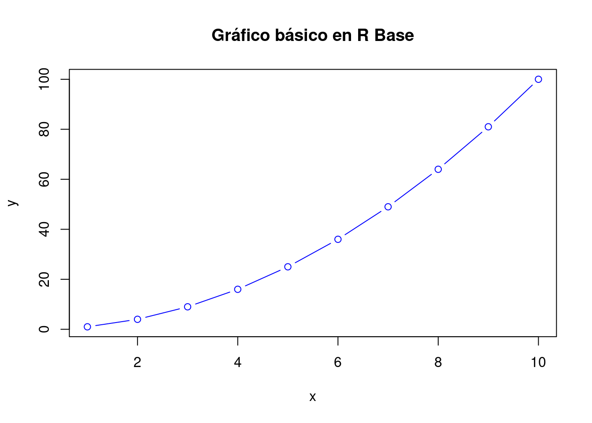
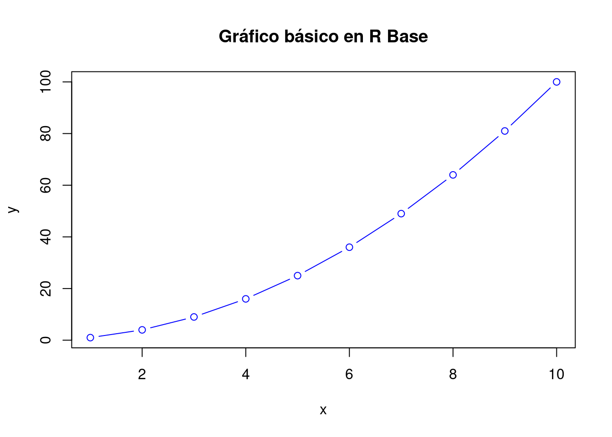
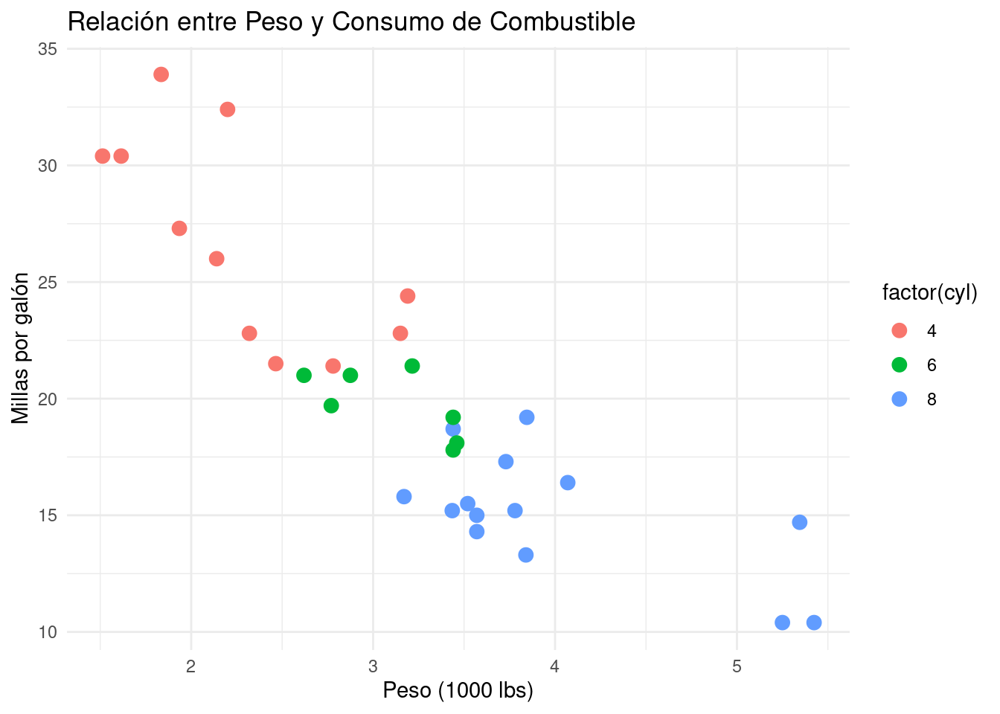

# Generar datos
x <- 1:10
y <- x^2
# Crear gráfico básico en R Base
plot(x, y, type = "b", col = "blue", main = "Gráfico básico en R Base")
En esta charla vamos a explorar cómo crear gráficos en R, comenzando por gráficos básicos en R base, luego avanzaremos hacia gráficos más complejos con ggplot2, y finalmente incorporaremos interactividad con plotly. Al final, generaremos un archivo HTML con todos los gráficos para compartir de forma fácily visual los resultados.
Primero, vamos a empezar con la creación de gráficos básicos usando las funciones incorporadas en R. Usaremos un conjunto de datos sencillo para ilustrar esto.
Ejemplo de gráfico básico:
# Generar datos
x <- 1:10
y <- x^2
# Crear gráfico básico en R Base
plot(x, y, type = "b", col = "blue", main = "Gráfico básico en R Base")
Explicación:
plot() es la función básica de R para crear gráficos.type = "b" indica que queremos líneas y puntos.col = "blue" cambia el color de la línea a azul.main añade un título al gráfico.ggplot2 es una de las bibliotecas más utilizadas para la creación de gráficos complejos y personalizables. Su sistema de “gramática de gráficos” facilita la creación de gráficos detallados y estilizados. Vamos a usar el conjunto de datos mtcars.
Ejemplo de gráfico con ggplot2:
# Cargar librería
library(ggplot2)
# Crear gráfico con ggplot2
ggplot(mtcars, aes(x = wt, y = mpg, color = factor(cyl))) +
geom_point(size = 3) +
labs(title = "Relación entre Peso y Consumo de Combustible",
x = "Peso (1000 lbs)", y = "Millas por galón") +
theme_minimal()
Explicación:
ggplot() inicializa el gráfico y aes() define los ejes y las variables.geom_point() añade puntos al gráfico y define el tamaño de los puntos.labs() permite añadir títulos y etiquetas a los ejes.theme_minimal() aplica un estilo simple al gráfico.plotly permite agregar interactividad a los gráficos, lo que resulta útil para presentaciones y exploración de datos. Convertir gráficos de ggplot2 a plotly es fácil.
# Cargar librería
library(plotly)
Attaching package: 'plotly'The following object is masked from 'package:ggplot2':
last_plotThe following object is masked from 'package:stats':
filterThe following object is masked from 'package:graphics':
layout# Crear gráfico interactivo
p <- ggplot(mtcars, aes(x = wt, y = mpg, color = factor(cyl))) +
geom_point(size = 3) +
labs(title = "Gráfico interactivo: Relación entre Peso y Consumo de Combustible",
x = "Peso (1000 lbs)", y = "Millas por galón") +
theme_minimal()
# Convertir a gráfico interactivo con plotly
ggplotly(p)Explicación:
ggplotly(p) convierte un gráfico estático de ggplot2 en un gráfico interactivo.Finalmente, puedes generar un archivo HTML con el siguiente comando en R para compartir los resultados: